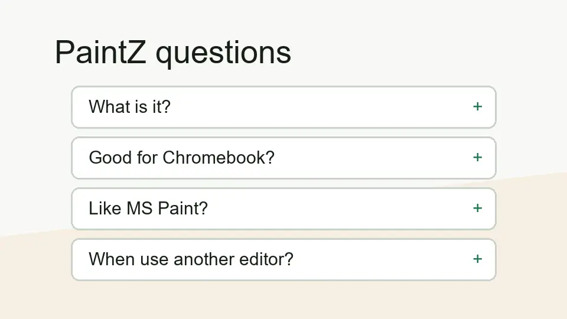

What is PaintZ app?
PaintZ is a lightweight browser and Chrome OS drawing app for simple paint-style work. It fits sketches, quick markups, and basic image edits better than advanced design workflows.
FAQ
Short answers for the practical questions behind the keyword: what PaintZ is, whether it makes sense for Chromebook, and when a different image editor is a better choice.

PaintZ is a lightweight browser and Chrome OS drawing app for simple paint-style work. It fits sketches, quick markups, and basic image edits better than advanced design workflows.
Yes, PaintZ makes sense for Chromebook users who want a simple drawing app without opening a heavier editor. It is strongest for fast, practical tasks rather than detailed professional artwork.
That is the easiest comparison. PaintZ feels closer to an MS Paint-style app than to a full image editing suite. That makes the app easier to understand if you only need basic drawing tools.
The official/source signals around PaintZ emphasize offline-friendly use. Still, if you are doing important work, test your own setup first and save your files deliberately.
The search intent does not look like a normal APK download query. PaintZ is better understood as a web and Chrome OS drawing app. I would not treat it like a mobile APK topic unless a specific trusted download route is confirmed.
Use another editor when you need layers, masks, professional retouching, complex illustration, advanced export settings, or team design handoff. PaintZ is more appropriate for simple, direct drawing tasks.